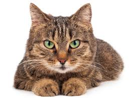
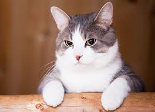
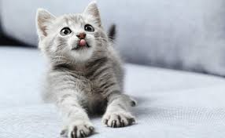
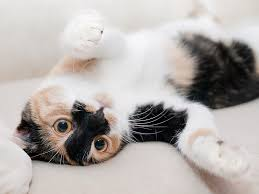
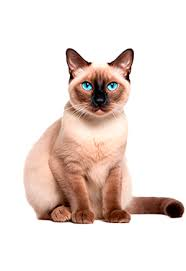

Max
Max es un gato juguetón y cariñoso que ama jugar con globos y perseguir sombras.

Max es un gato juguetón y cariñoso que ama jugar con globos y perseguir sombras.

Luna es una gata juguetona y cariñosa que ama jugar con globos y perseguir sombras.

Rocky es un gato juguetón y cariñoso que ama jugar con las plantas pequeñas y en la arena.

George es un gato juguetón y cariñoso que ama jugar con las plantas pequeñas y en la arena.

Juanito es un gato juguetón y cariñoso que ama jugar con las plantas pequeñas y en la arena.

Pepe es un gato juguetón y cariñoso que ama jugar con las plantas pequeñas y en la arena.